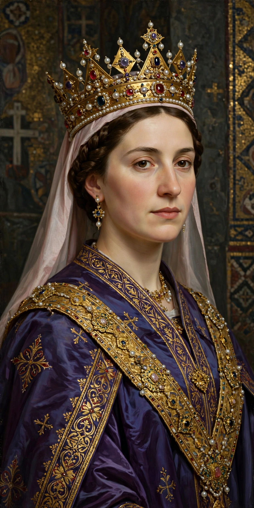

 | |
| Queen consort of France | 19 May 1051 – 4 August 1060 |
|---|---|
| Born | c. 1030, Kiev, Kievan Rus' |
| Died | 5 September 1075 (aged c. 45) |
| Spouse | Henry I of France; Ralph IV of Valois |
| Issue | Philip I of France; Hugh, Count of Vermandois |
| Father | Yaroslav the Wise |
| Mother | Ingegerd Olofsdotter of Sweden |
Anne of Kiev (c. 1030 – 5 September 1075) was a princess of Kievan Rus' who became queen consort of France by marrying King Henry I on 19 May 1051. She served as regent of France during the minority of her son Philip I from 1060 to 1066.
Anne was a daughter of Yaroslav the Wise, Grand Prince of Kiev, and his wife Ingegerd Olofsdotter of Sweden. She grew up at the Kievan court, one of the most cultured in Europe, and unlike many Western queens of the period she was literate, signing documents with her name in Cyrillic script — including signing herself "Anna Regina" (Latin for "Queen Anne") on a charter of 1063.
After the death of his first wife Matilda of Frisia, Henry I sought a bride unrelated to him to avoid consanguinity objections, and an embassy was sent to Kiev. Anne arrived in France and married Henry at Reims Cathedral in 1051. She introduced the Greek name Philip to Western European royalty by giving it to her eldest son, the future Philip I.
When Henry died in 1060, Anne became regent for the eight-year-old Philip, ruling jointly with Count Baldwin V of Flanders. She is the first French queen known to have acted as regent. Around 1061–1062 she married Count Ralph IV of Valois, a controversial union because Ralph was still married; the couple were excommunicated in 1064. Anne retained influence at court until about 1066.
Anne founded the Abbey of St Vincent at Senlis in 1060. She died in 1075. She remains a celebrated historical figure in both France and Ukraine, where she is known as Anna Yaroslavna; a statue of her stands at Senlis, and she is commemorated in Ukrainian culture as a symbol of the country's early ties to Western Europe.